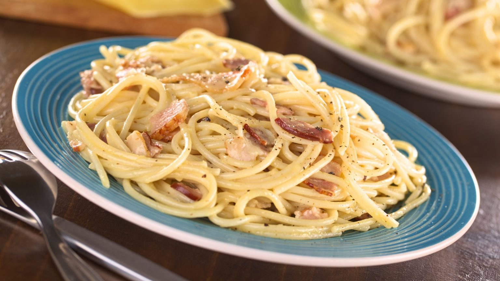

Carbonara clásica

Description
Las verdadera carbonara no se hace con nata!
Veamos como se elabora este plato delicioso, ideal para cualquier época del año
Ingredients
- Espaguetis 170g
- Queso parmesano 50g
- Dos yemas de huevo
- Guanciale y si no fuera posible panceta 100g
- Pimienta negra molida al gusto
Steps
- Poner agua abundante con sal en una olla grande en el fuego
- Cortar la panceta en tiras y dorar en una sarten, reservamos la panceta cuando este dorada
- Batir las yemas en un bol con el queso rallado, con una pizca de sal y pimienta
- Cuando el agua en la olla este hirviendo, añadir la pasta y cocinar lo que indique el envase para quedar al dente
- Con la pasta escurrida, la mezclamos con el huevo batido y el queso en la sarten no muy caliente donde esta la panceta para que la yema no se transforme en tortilla y quede sedosa la pasta
- Una vez todo mezclado, se emplata y se añade un poco más de parmesano rallado y pimienta al gusto